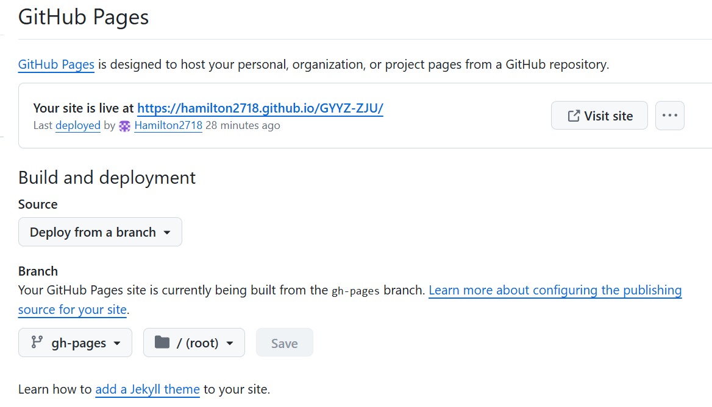

发布网站¶
一、安装：¶
在cmd中执行
和
二、创建¶
在D盘中输入
这里的myproject是你的文件夹名字(下面都用my-wiki代替)
mkdocs.yml是你的你的配置文件，在里面修改好之后，cd my-wiki 输入
会跳出：这个网址点进去之后可以本地预览
三、更改主题：¶
在mkdocs.yml里输入：
再重新serve即可四、部署¶
在github上创建仓库，权限设为public，然后依次
Text Only
然后在仓库里的settings->page把分支改为gh-pages，如下：

之后输入
点击它给你的网站就行了
git init
git add .
git commit -m"..."
git remote add origin https://github.com/Hamilton2718/GYYZ-ZJU.git
git branch -M main
git push -u origin main
五、problems¶
1. 如果遇到fatal: unable to access 'https://github.com/Hamilton2718/GYYZ-ZJU.git/': Recv failure: Connection was reset的报错
输入
操作¶
一、多级目录¶
我们也可以根据需要生成多级目录，多级目录也要在 mkdocs.yml 中配置。多级目录的语法格式如下：
注意： 其中 [子目录名称] 可以省略，如果省略，那么当前页面名称即显示为该 markdown 文件的一级标题。 实例：